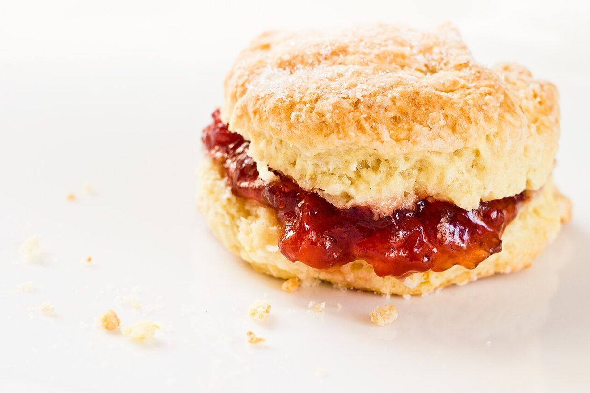

写真(イメージ)


制作側の連想
ペンダントネックレスの部位を、配置図にしてみる
このサイトは、首にかけるペンダントを図にしたつもりで作りました。六つの部位に番号をふり、上の図と並べています。制作側の連想で、お店の理念・由来とは無関係です。実際の製品の仕様を示すものではありません。
凡例
六つの部位
- 1ペンダントトップ胸もとに下がる、飾りの主役になる丸い部分。
- 2ベイルトップとチェーンをつなぐ、小さな輪の金具。
- 3チェーン小さな輪をつないで首にかける、長い鎖の部分。
- 4アジャスター端につく短い鎖で、長さを変えるためのところ。
- 5引き輪チェーンの片端にある、輪の形をした留め具。
- 6プレートもう片端にある、引き輪を掛けるための小さな板状の受け金具。
写真(イメージ)
コーヒーとパンの写真



写真はイメージです。お店のものではありません。
ご案内
お店のこと(確認できたものだけ)
| 所在地 | 〒510-0834 三重県四日市市ときわ５丁目３−２５ |
|---|---|
| 電話 | 準備中 |
| 営業時間 | 準備中 |
| 定休日 | 準備中 |
| ご予約 | 準備中 |
| 駐車場 | 準備中 |
| SNS | Instagram @jollity_coffee |